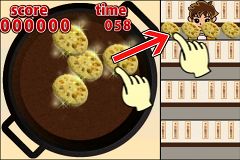

■How To Play

Drag the tempura from the saucepan and Drop them onto the customers to serve.
・Serve the tempura exactly what they ordered.
・Don't panic when work stands over by getting various orders from many customers.There is no priority for the customers and his orders to be served.
・Score depends on the degree of flying and quickness of servings.
・Watch out the time limit of the game.
●Combo And Fever Time
・Combo is counted up with successful serving
on specified timing.
・
When the Combo gets multiples of 10,"Fever Time" starts.
・No tempura is over-fried during the time.
・Keep the Combo up as long as you can to achieve high score.